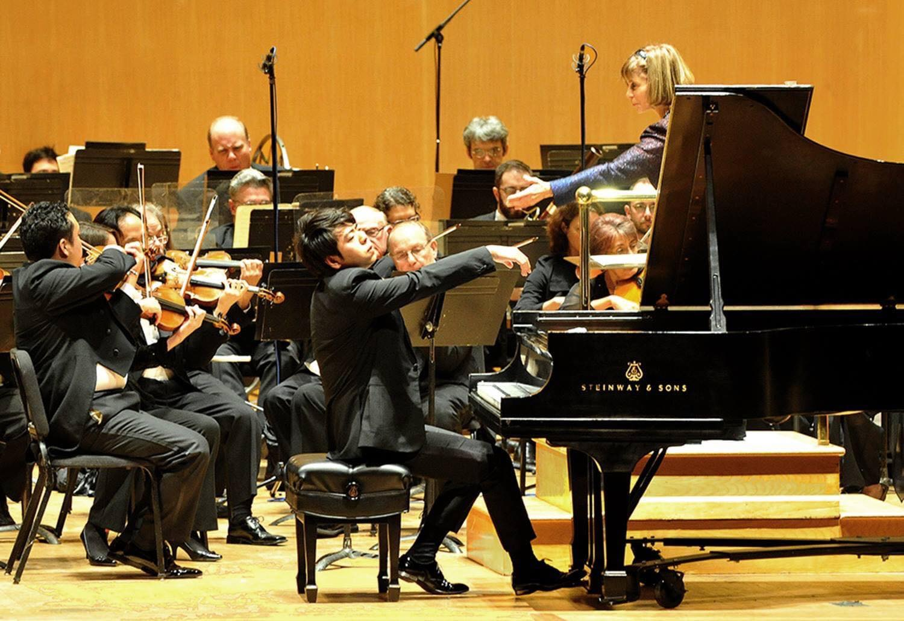

Dennis Kim
Born in Korea, raised in Canada, educated in the United States — and since 2018, holder of the Eleanor and Michael Gordon Chair.
Introduction
Concertmaster to orchestras on four continents.
First appointed a concertmaster at twenty-two, Dennis Kim has since led the Hong Kong Philharmonic — the youngest in that orchestra's history — the Seoul Philharmonic, the Tampere Philharmonic in Finland, and the Buffalo Philharmonic.
He has appeared as guest concertmaster on four continents, with ensembles including the BBC Symphony, the London Philharmonic and the Royal Stockholm Philharmonic, and has worked with Riccardo Chailly, Charles Dutoit, Riccardo Muti, André Previn and Sir Simon Rattle.
22
4
13
Also heard
On more soundtracks than concert stages.
As a recording artist, he can be heard on the soundtracks of Star Wars: The Rise of Skywalker, Moana 2 and The Man from Toronto, working alongside composers including John Williams and Alan Menken.
Engagements, studio enquiries and press.
Based in Irvine, California, and performing with Pacific Symphony, Trio Barclay and orchestras worldwide.
